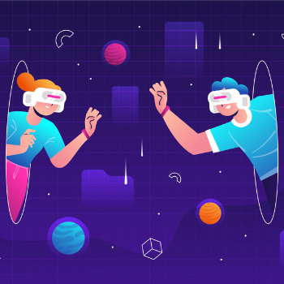

Cantores e djs já estão realizando eventos em ambientes digitais, e recebendo por isso. O show feito pela cantora Ariana Grande é um exemplo.
Metaverso
O lugar onde a realidade física e a virtual se associam, em um mundo cada vez mais digital, a linha que separa o real do virtual é cada vez mais difusa.
Apesar de ter virado pop recentemente, o termo metaverso é antigo. Ele foi usado pelo escritor Neal Stephenson em seu livro de ficção científica “Snow Crash”, publicado em 1992, ele juntou as palavras "meta" (que pode ser traduzida do inglês como "transcendente" ou "mais abrangente") e "universo". A obra conta a história de “Hiro Protagonist”, personagem que na “vida real” é um entregador de pizza, mas no mundo virtual – chamado na história de metaverso – é um samurai.
Tecnologias Envolvidas

Realidade Virtual
Ambiente tridimensional construído por meio de softwares. Para ter acesso a essa simulação da realidade, os usuários precisam de computadores, óculos de realidade virtual, fones de ouvido e outros equipamentos.

Realidade Aumentada
Diferente da VR, que leva o usuário para dentro do mundo virtual, a AR faz o oposto, e insere dados virtuais no mundo real. Jogos como o Pokémon Go usam essa tecnologia.

Blockchain e Criptomoedas
A blockchain (banco de dados público e descentralizado), as criptomoedas e os NFTs (sigla em inglês para tokens não fungíveis) também dão suporte para o metaverso. Por meio delas, é possível movimentar valores e realizar o registro de propriedades virtuais.
A economia cripto do metaverso
Já existe uma economia do metaverso construída em blockchain, com produtos e serviços. Veja alguns dos exemplos citados em relatório da Grayscale.
Proprietários de imóveis construíram outdoors, e passaram a vender esses espaços para jogadores que querem fazer algum tipo de anúncio.
Existem cassinos em plataformas de metaverso, onde os gamers podem apostar em jogos de azar e levar – ou perder – algumas criptomoedas.
Artistas virtuais também comercializam suas obras de arte registradas em NFTs nesses ambientes digitais. Casas físicas de renome, como Sotheby’s, se renderam a esse tipo de negócio.
Empresas que estão investindo no Metaverso

Não é só o Facebook que entrou de cabeça nessa nova onda. A Nvidia, por exemplo, anunciou em agosto o NVIDIA Omniverse , uma plataforma colaborativa de simulação. Nela, designers, artistas e outros profissionais podem trabalhar juntos na construção de metaversos.
Já a Microsoft colocou no mercado, no início de 2021, o Mesh , uma plataforma que permite a realização de reuniões com hologramas. Também criou avatares 3D para o Teams, sua ferramenta de comunicação.
Em novembro, em um aceno à utopia, a Nike criou a Nikeland , uma plataforma dentro do game Roblox. Já em dezembro, a multinacional americana adquiriu uma startup especializada em NFTs de moda.